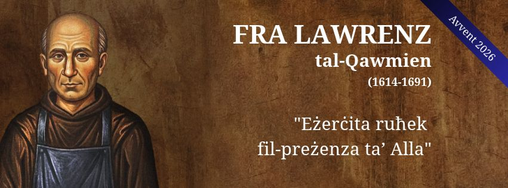

Il-Karmelitani Skalzi jistiednuk tingħaqad magħna għal irtir online
Żmien ta’ riflessjoni, mistrieħ u tiġdid
Reġistrazzjoni
Irċievi r-riflessjonijiet tal-irtir direttament bl-email u ħalli l-ispiritwalità Karmelitana tmexxik matul l-Avvent jew ir-Randan
Politika tal-privatezza
Nużaw Mailchimp bħala pjattaforma tal-marketing. Billi tikklikkja l-buttuna biex tabbona hawn taħt, taqbel li d-data tiegħek tintbagħat lil Mailchimp għall-ipproċessar.
Tista’ ssir taf aktar dwar il-politika ta’ protezzjoni tad-data ta’ Mailchimp hawnhekk.Irtir spiritwali attwali

Avvent 2026 ma’ Fra Lawrenz tal-Qawmien
Figura diskreta tal-Karmelu, Fra Lawrenz tal-Qawmien kien wieħed mill-ikbar għalliema tal-ħajja spiritwali tas-seklu sbatax. It-tagħlim tiegħu, li reġa’ ngħata prominenza dan l-aħħar mill-Papa Ljun XIV, għadu ta’ attwalità tal-għaġeb.
Dan il-patri umli jgħallimna ngħixu fil-preżenza ta’ Alla fil-qalba tal-ħajja tagħna ta’ kuljum. It-tagħlim tiegħu jagħmel parti mit-tradizzjoni kbira Nisranija li twieġeb għas-sejħa ta’ Ġesù biex “nitolbu dejjem” (Lq 18, 1), u għall-eżortazzjoni ta’ San Pawl: “Itolbu bla waqfien” (1 Tess 5, 17). Għal Fra Lawrenz, it-triq hija sempliċi: nibqgħu fil-preżenza ta’ Alla f’kull mument, irrispettivament minn x’inkunu qegħdin nagħmlu.
Matul dan iż-żmien tal-Avvent, nistednukom tiskopru din l-iskola tal-preżenza ta’ Alla, sabiex tikbru f’relazzjoni aktar sempliċi, aktar ta’ fiduċja u aktar intima mal-Mulej.
Werrej
Bħala email, kull nhar ta' Ġimgħa.
podcast tal-ġimgħa,
suġġerimenti għall-prattika fil-ħajja ta’ kuljum,
, u l-kalendarju tal-Avvent.
Irtiri preċedenti
Għażla ta’ rtiri mis-snin ta’ qabel
Gwidi spiritwali Karmelitani
Qaddisin u ikoni li jidhru fl-irtiri tagħna
Mistoqsijiet frekwenti
Mistoqsijiet li jsiru ta’ spiss
X’inhu irtir online?
L-irtir online huwa maħsub biex jgħinna napprofondixxu r-relazzjoni spiritwali tagħna ma’ Ġesù fid-dawl tal-Evanġelji. Għal dan il-għan, jintbagħtu riflessjonijiet bl-email matul kull ġimgħa tal-Avvent u tar-Randan.
Kemm-il darba se nirċievi messaġġi?
Se tirċievi email ta’ merħba u mbagħad emails ta’ kull ġimgħa matul l-Avvent u r-Randan.
Il-parteċipazzjoni tiswa xi ħaġa?
Ir-reġistrazzjoni hija b’xejn. Tista’ tagħti donazzjoni volontarja biex tappoġġa dan l-appostolat.
Ma nirċevix email – x’għandi nagħmel?
Jekk jogħġbok iċċekkja l-folder tal-ispam. Jekk tlift xi materjal, tista’ ssibu wkoll fl-arkivju ta’ dan is-sit.
Qassam l-aħbar
Stieden lil sħabek u lill-familja tiegħek biex jieħdu sehem f’dan l-irtir billi taqsam din il-paġna: irtir-karmelitan-onlajn.karmel.at.
Nissuġġerulek tniżżel u tipprintja l-poster tal-irtir biex taqsamu fil-parroċċa, fil-komunità jew fil-grupp tat-talb tiegħek. Nawgurawlek Avvent imbierek u esperjenza ta’ rtir li tagħti ħafna frott!
Materjali